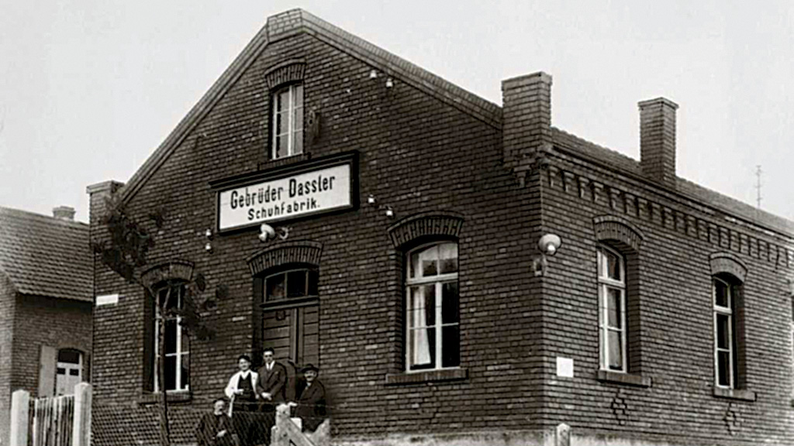

O alemão Adolf Dassler tinha 20 anos quando começou a usar seu talento de artesão para confeccionar sapatos esportivos. O ano era 1920 e a família vivia na minúscula cidade de Herzogenaurach, que ainda hoje tem apenas 30 mil habitantes.Os pais diziam que ele precisava encontrar um emprego de verdade. Com a rebeldia natural da juventude, ele não deu ouvidos. Pior. Acabou atraindo o irmão mais velho, Rudolf, para sua aventura de fabricar calçados. Adi era o criativo. Rudi, o administrador. Adi era a alma do negócio. Rudi, o cérebro. Na hora de batizar a empresa que estavam criando, recorreram, como legítimos alemães, ao pragmatismo. Nascia a Gebrüder Dassler Schuhfabrik. Em bom português: Fábrica de Sapatos dos Irmãos Dassler. E assim ficou durante alguns anos. Só depois de muitos percalços seria adotado um nome mais curto, de fácil assimilação. O visionário Adolf juntou seu apelido, Adi, às três primeiras letras do nome da família, Das.

Assim nasceu a Adidas, marca que está entre as mais importantes e respeitadas do mundo, com faturamento anual global em torno dos 20 bilhões de euros (cerca de R$ 120 bilhões), mais de 50 mil funcionários e história repleta de fatos marcantes. A trajetória da companhia é tão fantástica e intrigante que até virou filme no cinema e série de TV (leia o quadro). Agora, exatamente 100 anos após sua fundação, a empresa está lançando um fabuloso livro para celebrar a efeméride. Intitulada The Adidas Archive: The Footwear Collection, a obra traz 357 tênis, enorme quantidade de histórias interessantes, designs inovadores — inclusive protótipos — e fotos belíssimas.
Aos 22 anos, o corredor Jesse Owens chegou à Alemanha, já comandada por Adolf Hitler. Aqueles Jogos Olímpicos deveriam servir ao propósito nazista de comprovar a superioridade ariana. Segundo o ditador, um atleta negro jamais venceria um branco numa competição esportiva. Owens não apenas venceu. Humilhou. O rapaz conquistou quatro medalhas de ouro: nos 100 e nos 200 metros rasos, no salto em distância e no revezamento 4×100 metros. Para deixar Hitler ainda mais desmoralizado, Owens bateu os recordes mundiais nos 200 metros e no salto em distância. Nos pés, o velocista americano usava tênis Adidas.

Naquela oportunidade, as chuteiras eram produzidas com couro de vaca. Contudo, a marca germânica criou modelos do principal acessório dos jogadores com couro de canguru e com a opção de substituir as travas. Além disso, a famosa três listras que simbolizam fortemente a marca apareceram no modelo. Curiosamente, todo o time da seleção alemã que disputava a final da Copa do Mundo de 1954 contra a Hungria usava o modelo da Adidas. Diante de um gramado molhado por conta da chuva, o modelo da chuteira permitiu que os jogadores alemães trocassem as travas da chuteiras, substituindo-as por travas maiores. A mudança acabou ajudando a seleção alemã faturar o título. A fama do produto se espalhou pelos quatro cantos do mundo e as vendas aumentaram significativamente.